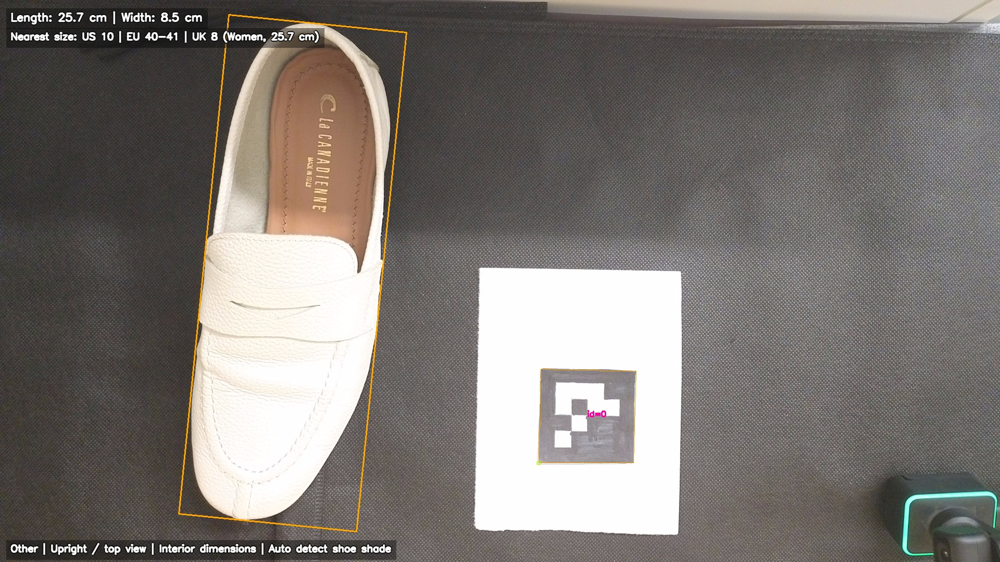
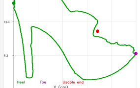
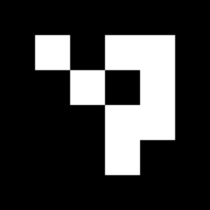
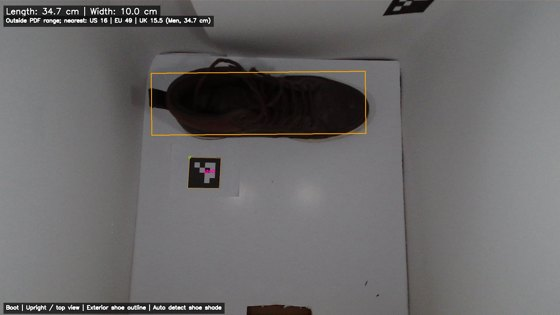
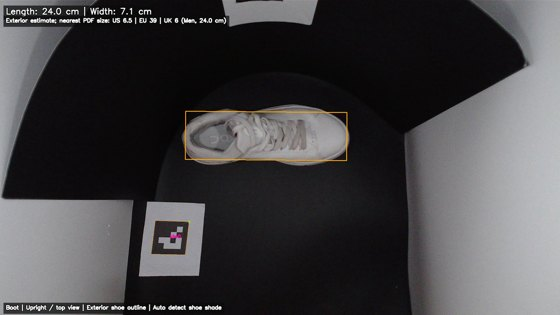
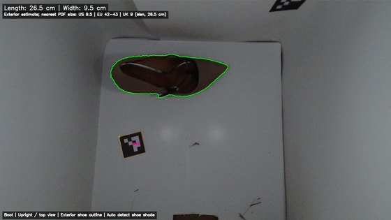
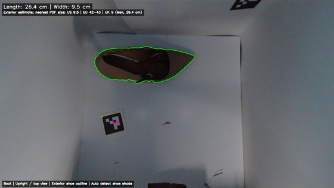
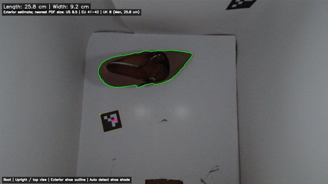
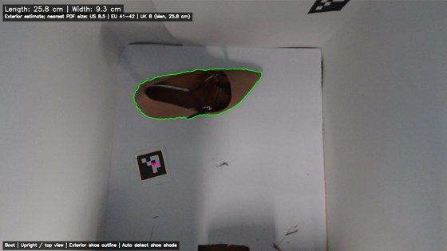

Computer vision | Measurement
Camera-based shoe measurement
Estimate a shoe's dimensions from its contour and a known-size reference marker.
- Status
- Measurement prototype
- Reference
- 5 cm ArUco marker
- Stack
- Python, OpenCV, PySide6

Measurement pipeline
- Acquire an image from a USB camera.
- Detect the ArUco marker and calculate pixels per centimeter.
- Segment the object and analyze its contour.
- Apply the selected calibration profile.
- Save an annotated image and structured measurement data.
Desktop workflow
The PySide6 application brings camera selection, preview, measurement profiles and capture controls into one interface. Saved JSON data includes dimensions, scale and contour coordinates.
Engineering constraints
Camera position, lighting, the background and the height difference between the shoe and marker all affect the result. External shoe dimensions also differ from usable internal dimensions.
Outcome and limits
The archive contains application code, tests and paired image/JSON measurements. A calibrated error distribution has not been established here, and shoe-size suggestions should not be treated as a guaranteed fit.
Measurement evidence




Pixel scale calculation
Known marker edge: 5 cm. Object length = object span in pixels / pixels per centimeter.
Illustrative scale conversion only. It does not perform camera detection, perspective correction or an accuracy test.
Marker detection in the source
The project averages the detected marker's four edge lengths to obtain an image scale. A missing marker returns no scale instead of producing a measurement.
dictionary = cv2.aruco.getPredefinedDictionary(cv2.aruco.DICT_4X4_50)
detector = cv2.aruco.ArucoDetector(dictionary, cv2.aruco.DetectorParameters())
corners, ids, _ = detector.detectMarkers(frame)
overlay = frame.copy()
if ids is None:
return None, overlay, []
cv2.aruco.drawDetectedMarkers(overlay, corners, ids, OVERLAY_BLUE)
marker = corners[0].reshape(4, 2)
side_lengths = [np.linalg.norm(marker[i] - marker[(i + 1) % 4]) for i in range(4)]
marker_regions = [detected.reshape(4, 2) for detected in corners]
return float(np.mean(side_lengths) / marker_size_cm), overlay, marker_regionsSource: find_scale_and_markers in main.py. The download contains the function and its imports, not the entire camera application. The method assumes a valid positive marker size.
Archive gallery 9 items














